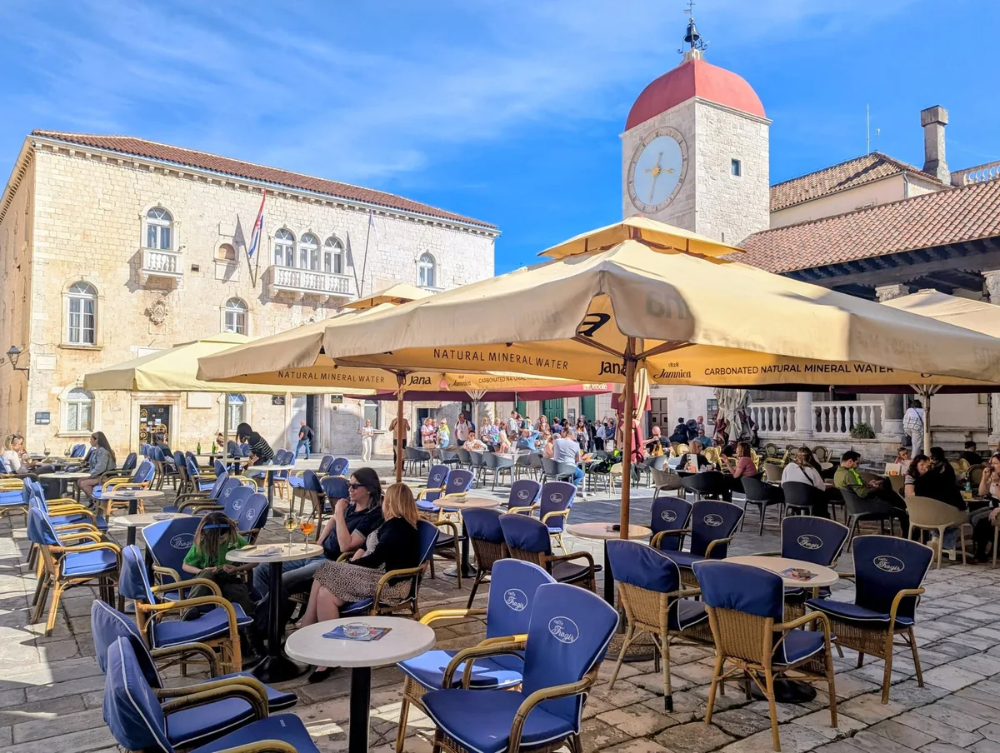

An island of stone, 2,300 years old. The sights, restaurants, hotels and day trips in Trogir worth your time — honest, and without tourist prices.
Trogir is a tiny island town between the mainland and Čiovo — one of Europe's best-preserved Romanesque-Gothic old towns, built dense and low from pale stone, a UNESCO World Heritage Site since 1997. We know it street by street, and this guide is the honest version: what's worth your time, and how to enjoy it without the tourist prices.
This guide is built like a book — follow the thread and each step leads to the next, the way you'd actually plan the trip. Prefer to browse by topic? Use the menu above.
The 13th-century Radovan Portal is considered one of the most important sculptures on the Adriatic.
A Venetian fortress with the best panoramic view over the town, Čiovo and the open sea.
The heart of the old town on the main square — a Venetian loggia and late-Gothic palace.
In the evening the waterfront fills with locals. This is where you feel the real Trogir.

📷 Our photoPopular trips: Krka, Hvar & Blue Cave, Plitvice and Trogir boat tours.
Swim beneath the waterfalls in the national park — the easiest big nature day from Trogir.
Croatia's most upmarket island plus the Blue Cave on Biševo — a day out on the water.
A UNESCO natural heritage site — turquoise lakes and waterfalls in dense karst forest.
Diocletian's Palace, lively lanes and colourful markets — just 20 minutes from Trogir.
Compare the best places to stay, find the best beaches and plan day trips to Krka, Hvar and Plitvice — all in one place.